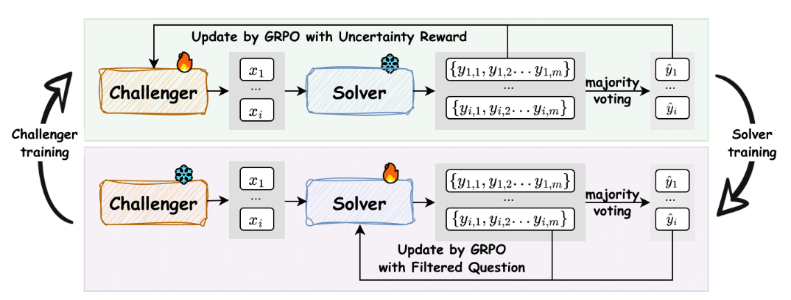

Literature Review: R-Zero: Self-Evolving Reasoning LLM from Zero Data
This paper proposes a fully autonomous, zero-human-data framework for improving reasoning LLMs by co-evolving two agents initialized from the same base model: a Challenger that generates problems and a Solver that learns to solve them. Training alternates GRPO-based optimization of the Challenger (rewarded for producing problems that drive Solver uncertainty) and GRPO-based fine-tuning of the Solver on filtered pseudo-labeled problems. The paper demonstrates consistent gains on a suite of math benchmarks and some transfer to general reasoning tasks while also identifying a systemic instability: performance improvements tend to collapse after several iterations due to degraded pseudo-label quality and feedback-loop degeneration.
Key Insights
-
Co-evolutionary curriculum via uncertainty targeting. R-Zero formalizes the idea that maximal learning occurs when tasks sit at the frontier of the model’s capability. The Challenger’s uncertainty reward, which peaks when Solver vote accuracy ≈ 50%, directly operationalizes this principle and yields a focused curriculum rather than random or trivially easy synthetic tasks.
-
Two-model separation matters. Empirically, separating Challenger and Solver prevents rapid collapse and produces higher-quality pseudo-labels than a single model playing both roles. Parameter sharing induces overconfidence and lower pseudo-label fidelity.
-
Label-free RL and synthetic-data failure modes. The paper contributes evidence that label-free self-training without external anchors amplifies biases and reduces diversity over time, echoing prior findings on recursive synthetic-data collapse. The pseudo-label majority vote is an attractor that can reinforce existing errors.

Figure: R-Zero co-evolution: Challenger proposes frontier tasks using uncertainty rewards; Solver trains on filtered pseudo-labels. This loop amplifies capability early and risks collapse later.
Ratings
Novelty: 3.5/5
While being a very early version of the “self-evolving” agent, the novelty is in the system-level engineering and the explicit study of iterative stability, not in inventing a new learning algorithm.
Clarity: 4/5
The paper is generally clear about mechanism, hyperparameters, and ablations. The theoretical motivation for the 50% uncertainty objective is succinctly stated. My only clarity complaints are: the BLEU-based repetition penalty is presented without alternatives discussion, and the GPT-4o judge dependence warrants a more explicit treatment of oracle bias and potential evaluation leakage.
Personal Perspective
This paper tackles the current bottleneck in human-labeled data scale. However, I would still have concerns about the fact that the paper evaluates on public math benchmarks while using synthetic data generated by models that were themselves trained on massive human corpora. There is a real risk that synthetic generation recreates or memorizes evaluation examples or the patterns that test suites contain, inflating gains. Additionally, majority-vote pseudo-labels degrade across iterations and GPT-4o is used both as an external judge and as a quasi-oracle to estimate pseudo-label fidelity. That introduces two problems: first, GPT-4o itself has failure modes; second, if GPT-4o (or any strong judge) was used in development, evaluation can be biased. Use of multiple independent human-verified holdouts or a reserved small labelled set as an anchor would strengthen claims.
On top of that, generalization beyond math is speculative. The jump from math to open-ended natural language tasks is nontrivial because objective verification is difficult to define.
Enjoy Reading This Article?
Here are some more articles you might like to read next: